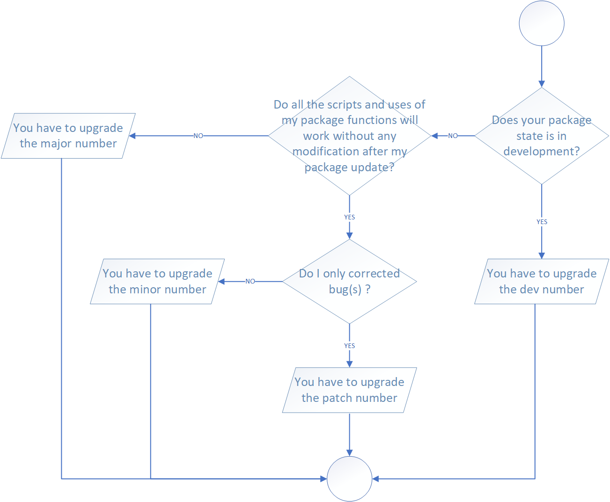
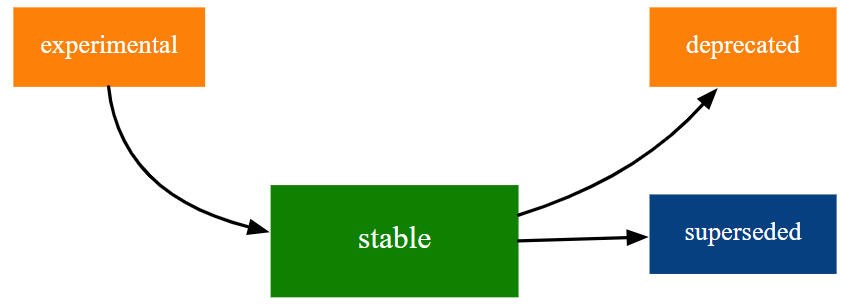

vignettes/vignette_03_package_maintenance_management_distribution.Rmd
vignette_03_package_maintenance_management_distribution.RmdToday, it’s impossible to find a modern package without documentation associated. Document your code and globally your software is an essential part of his development. Do without is a very dangerous way which may cause problems in the future, especially if you work with several colleagues or even if you package became complex. Historically painful, this process is well assisted, especially with the association to other packages. Furthermore, you will see that there are several “level” of documentation and each have specific and transversal aims.
Documenting functions is the first step of the global documentation process. This kind of documentation will produce user information, like the arguments of your function, who to specify them and some other specification like what your function return. The way to doing that has been made much easier by modern package, especilly one collaed roxygen2. R help files use a complicated syntax similar to LaTeX that can be easy to mess up. Instead of writing this all ourselves using Roxygen lets us just write some special comments at the start of each function. This has the extra advantage of keeping the documentation with the code which make it easier to keep it up to date.
Roxygen process work through tags that you will add at the begging of
your code. Tag’s syntax begin with #' associated to
@something for call a specific tag. For start, you can
generate a Roxygen skeleton from your function in RStudio, by opne the
Code menu and select Roxygen skeleton.
There are a lot of tags that you can use but you will find below the “most” common and useful:
@name - Define the topic name (same name as your
function below the documentation).@title - Define the title of your documentation.@description - Describre@param - Describe a function input. Should describe
acceptable input types and how it affects the output. The syntax is
name follwing by a space and description. The
description is usually one or two sentences but can be as long as
needed. Document multiple arguments by separating their names with
commas without spaces.@return - Describe the function’s output. Typically
will be a 1-2 sentence description of the output type, but might also
include discussion of important errors or warnings.@details - Additional details about the function.@examples - Executable R code that demonstrates how the
function works. Code must run without error.@examplesIf - The syntax is TRUE or
FALSE following on the next line by an example code. Run
examples only when condition is TRUE.@importFrom - Write in the NAMESPACE file which
function(s) you use in our code from which package(s).@export - Adding in the NAMESPACE that this is a
function that we want to be available to the user. If we had an internal
function that wasn’t meant to be used by the user we would leave out
@export.@keywords - Initially use for increase the efficient of
the searching process dealing with you package, if you add
@keywords internal you will remove the function from the
documentation index. It’s useful if you want to create a global
documentation help when you write ?package_name in the R console.For bulding your documentation you can click on the section
Build on the RStudio interface, More with the
gear logo and Document. You can also launch the following
code:
devtools::document()It’s also advising configuring an update of the documentation when
you compile your package. You have to configure that once through the
Configuration Build Tools menu (section Build
and subsection More) in the tab Configure near
the ticked line Generate documentation with Roxygen.
Users can find out about our functions using
?function-name but what if they want to find out about the
package itself? There is some information in the
DESCRIPTION but that can be hard to access. Let’s add a
help file for the package. Launch the following line:
usethis::use_package_doc()This is the second level of documentation. In the previous section,
we documenting functions and our package. Vignettes are short tutorials
that explain what the package is designed for and how different
functions can be used together. Usually, they are write in R Markdown files. In RStudio,
you can click on the Help menu and
Markdown Quick Reference for display a quick guide to how
the R Markdown format work. To create your first vignette, use:
usethis::use_vignette("vignette_name")To see what the vignette looks like run:
devtools::build_vignettes()Asking devtools to build
the vignette rather than rendering it in another way (such as the Knit
button in RStudio) makes sure that we are using the development version
of the package rather than any version that is installed. The rendered
vignette(s) will be create in the new directory called
doc/.
If you plan on sharing the source code rather than the built package it is useful to have a README file to explain what the package is, how to install and use it, how to contribute etc. For example, if you planned to use GitHub, the README will be associated to the “welcome page” of the repository associated. Using R, the best way is to create a .Rmd for a rich intermingling of code and output (use .md for a basic README).
usethis::use_readme_rmd()Rmd will be automatically added to .Rbuildignore. Furtermore, if the
current project is a Git repo, then use_readme_rmd()
automatically configures a pre-commit hook that helps keep README.Rmd
and README.md, synchronized. The hook creates friction if you try to
commit when README.Rmd has been edited more recently than README.md. If
this hook causes more problems than it solves for you, it is implemented
in .git/hooks/pre-commit, which you can modify or even delete.
There are the comments near the top that mention badges and you might have seen badges (or shields) on README files in code repositories before. Theses badges include visual information in the README file, such as the CRAN version, test coverage and link out to relevant external resources. Take a look on the badge documentation to know more about that.
This is one of the most interesting section regarding the documentation. If you have a publicly available package it can be useful to have a website displaying the package documentation. It’s just like a friendly display of all the documentation that you have design through sections before. Furthermore, it gives your users somewhere to go and helps your package appear in search results. for that task you can use the package pkgdown. If you have it installed, you can set it iu with the following line:
usethis::use_pkgdown()Verify your package is one of the thing that you have to do many and many time, especially if you modify the code or add new functions. Run the process frequently should simplify your development and corrections should improve your code writing in the future. Typically, there are two kinds of verification, the checking and the testing.
Aim of this point is to check that your package don’t have any mistake in term of structure and syntax. This is essential if you want to submit your package to CRAN because you must not have any errors or warnings. For doing that the most easier way is to launch the following code in the package directory:
devtools::check()You should saw several outputs with at the end a subdivision of three parts: errors, warnings and notes. The goals is to have 0 error or warning and less a possible notes. Errors happen when you code has broken and failed one of the checks. If errors are not fixed your package will not work correctly. Warnings are slightly less serious but should also be addressed. Your package will probably work without fixing thise but it is highly advised that you do. Notes are advice rather than problems. It can be up to you whether or not to address them but there is usally a good reason to. Keep in your mind that the checking process will stop if we encount an error. Information about the error will be display in the output, but the correction of it does not guarantee that you shouldn’t have another error occur (this is a sequential process). Everything work fine when you have at the end only notes or in the best case nothing.
Testing your package is the section kind of verification that you can
do. The function devtools::check() verify that our package
passes standard checks, like for the typing or code/package structure,
but we don’t verify that our functions work in the way that we expect.
This is where unit tests highlight. One approach to writing unit tests
is what is known as “test-driven development”. The idea here is to write
the tests before you write a function. This way you know exactly what a
function is supposed to do and what problems there might be. While this
is a good principle, it can take a lot of advance planning. A more
common approach could be called “bug-driven testing”. For this approach
whenever we come across a bug, we write a test for it before we fix it,
that way the same bug should never happen an again. When combined with
some tests for obvious problems, this is a good compromise better
testing for every possible outcome and not testing at all.
There are a few ways to write unit tests for R packages but one of the easier way is to use the testthat package. We can set everything up with the following command line:
usethis::use_testthat()Now, when you run checking process through
devtools::check(), all tests associated to our package will
run too. For create a new test file you can use the following command
line:
usethis::use_test("name_test_file")Each set of tests starts with the test_that() function.
This function has two arguments, a description and the code with the
tests that we want to run. Inside the code section we see an expect
function. This function also has two parts, the thing we want to test
and what we expect it to be. There are different functions for
different types of expectations.
To run our tests we use:
devtools::test()If you want to see what parts of your code need testing you can run
the devtools::test_coverage() function (you might need to
install the DT package first). This function uses the
covr package to make a report showing which lines of your
code are covered by tests.
Using functions from other packages can save you time and effort in development but it might make it more difficult to maintain your package. Deciding which packages (and how many) to depend on is a difficult and philosophical choice. Some things you might want to consider before depending on a package are:
When it’s clear in your mind that the best solution is to use function(s) from other packages, you have to specify in your package what kind of dependency you have. There are three main types of dependencies:
imports - this means that we use functions from these
packages and they must be installed when our pacakge is installed.suggests - these are packages that we use in developing
our package (such as testthat)
or packages that provide some additional, optional functionality. These
packages aren’t usually installed and you need to do a check before
using them.depends - shouldn’t usually be used unless your package
closely complements another package. For example, depends is necessary
is if you package mainly operates on an object defined by another
package.To declare a dependency, the best way is to use the function use_package. In practice, we advise advice to an optionally argument of the function, min_version, which specify what is the minimum version of the package that you have to install, according to the version that you have on your computer. With that, you reduce the risk of incompatibility when you share your package to other people.
# if you want to add a package present on the CRAN
usethis::use_package(package = "package_name",
type = "Imports",
min_version = TRUE)
# if you wan to add a package from an in-development package, from a Git repository for example
usethis::use_dev_package(package = "package_name",
type = "Imports",
remote = "remote_path")
# for the remote syntax check the documentation here: https://remotes.r-lib.org/articles/dependencies.htmlWhen you add a dependency through this process you should have a message like that:
Refer to functions with `package_name::fun()`In our code you have two solutions:
package_name::function_name()
importFrom(package_name,function_name). You can add this
line by hand in theory, but it’s highly recommended to use the
documentation generation of roxygen2 with the syntax
#' @importFrom package_name function_name (take a look to
the section X.X dedicates to the documentation generation). If a
function has the same name in different packages, use the first
codification to avoid any mistake.If the function associated to the explanation above appear several
time in our package, you can only import it once. It doesn’t matter
where we put the @importFrom line (or how many times) it
will still be added to NAMESPACE. This means we can put all
import in a central location. The advantage of this is that they only
appear once and are all in one place but it makes it harder to know
which of our functions have which imports and remove them if they are no
longer needed. Which approach you take is up to you.
Managing the evolution of your package is one of the challenge that you will have to deal when you develop your package. Very few users complain when a package gains features or gets a bug fix. Instead, it’s become more complicated when we begging to make some breaking changes, such as removing a function or narrowing the acceptable inputs for a function. Since change is inevitable and in most time benefit for your package, the best thing to do is to establish a clear communicate channel between all the users and help them to adapted to change.
During the life of your package, it will change many times. If you use a code sharing website like GitHub, the smallest increment of change that’s meaningful is probably a Git commit. However, even if this state is very useful for the maintainer and globally keep an history of your package evolution, the primary signal of meaningful change is to increment the package version number and release it.
Using the good practices, is useless if you don’t have a good
versioning system of your package. It’s more important and relevant when
it comes to things like solving user issues or deploy/share your work
with others peoples. Formally, an R package version is a sequence of at
least two integers separated by either . or -.
For example, 1.0 and 0.9.1-10 are valid
versions, but 1 and 1.0-devel are not.
Furthermore, R considers that version like 1.9 to be equal
to 1.9.0, and by addition less than 1.9.2. In
the modern package of the tidyverse universe, several conventions are
recommended in addition to managing your package version number:
major.minor.patch. Never use versions like
1.0. Always spell out the three components,
1.0.0. For example version number 1.9.2:
major number. This is a significant change to
the package that would be expected to break users code,minor number. A minor version update means
that new functionality has been added to the package. It might be new
functions to improvements to existing functions that are compatible with
most existing code.patch number. Patch updates are bug fixes.
They solve existing issues but don’t do anything new.0.0.1, 0.1.0, and 1.0.0
are all greater than 0.0.0.9000.This kind of semantic is inspired in part by Semantic Versioning and by the X.Org versioning schemes.
Now we know the design of the version format, the next step is to decide which type of release you make. The transition from 0.3.1 to 0.3.2, which is a patch release, has a very different vibe from the transition from 0.3.2 to 1.0.0, which is a major release. A key concept to solve that is whether the associated changes are backward compatible, meaning that pre-existing code will still “work” with the new version. A change that is not backward compatible is often described as a breaking change. In practice, backward compatibility is not a clear-cut distinction. A good way to distinguish a breaking change is to answer the following question: does all the script create with functions of my package will running without any modifications if I update my package? Is the answer is no, your update is a breaking change and you need to update the major number of your version package.
Here are some concrete examples of breaking change:
In opposition, these examples are usually not considered breaking:
All examples above are global case and of course some of your specification could change the breaking consideration associated.
In addition, the figure below could help you when you will update your package version.

In practice, the function use_version() (from the
package usethis, documentation associated here)
can provide a clever support for updating your package version. If your
package is associated with a Git repository, you can also prepare a
commit for version updated.
# for interactive selection
usethis::use_version()
# for specify a level of increment.
# you can choose in the argument which between "major", "minor", "patch" or "dev".
# the process will propose to you to create a commit associated with the updated version.
# with the argument push = TRUE (by default FALSE) you can directly make a commit and push it on the repository associated.
usethis::use_version(which = "dev",
push = TRUE)In addition to the update of your package version number, it’s
important to record what changes have been made. For that, good
practices suggest to create a new markdown file, called NEWS.md, at the
edge of your package directory. Another function, use_news_md
can help you can create the initial file template.
# creation of the NEWS.md file
usethis::use_news_md()You are free to structure your NEWS.md file like you want but we recommend at least to have this kind of structure (use only section useful for your release/dev version):
# package_name major.minor.patch.dev - year-month-day
## Added
* Code added n°1
* Code added n°x
## Changed
* Code changed n°1
* Code changed n°x
## Removed
* Code removed n°1
* Code removed n°xIn the tidyverse universe, package evolution become more structured and deliberate over the years. The package lifecycle provide a succession of tools for support your work. There are tow major components:
The figure below present to you the four primary stages of the tidyverse lifecycle.

The four lifecycle stages are:
The lifecycle stage is often communicated through a badge. If you’d
like to use lifecycle badges, call usethis::use_lifecycle()
to do some one-time setup.
Now, you have three options to use lifecycle badges:
@description
block like that
#' @description
#' `r lifecycle::badge("deprecated")`
#' `function_name()` has been deprecated in favour of the new function `new_function_name()`@param tag
#' @param parameter_name `r lifecycle::badge("deprecated")`. Use the `argument_name` argument instead.README file)
usethis::use_lifecycle_badge()During all the life of a package, you will be confronted several times to a special moment: you development a new function or a new piece of code and you have to integrate them in the source code. The key question here is to ask yourself if you code will does not produce regression in the developed application. The aims of the Continuous Integration (CI) and Continuous Development (CD) is to detected problems soon as possible in the development phase, automate execution of tests and verification and, in a global view, monitor and manage the progress of our software development.
GitHub Actions for the R language
check-release: a “simple” workflow to check your package with the release version of R on ubuntu (latest version available).
check-standard: recommended for any package that is, or aspires to be on the CRAN. This process runs R CMD check across a few combinations of operating system and R version. In addition, the usethis process add a badge reporting the R CMD check result in the README file.
check-full: the more complex verification check.
lint: run function lintr::lint_package() on an R package. The package lintr provides a static code analysis for R (analysis of the code without executing them, in opposition to a dynamic program analysis). It’s a very useful way to check our code and identify mistakes or non-compliance of good practices.
pkgdown: build a pkgdown site for an R package and deploy it to GitHub Pages. Pkgdown is an R package designed to make quickly and easily a package website.
This vignette was made according to the guidelines and advises provided by several resources (many thanks to them !). You will find below the identification and links (if available) associated.